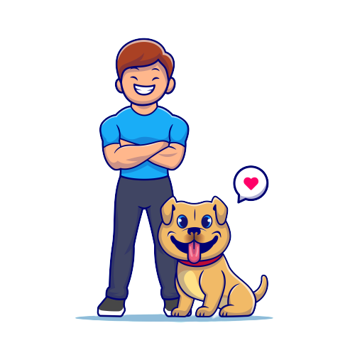

Walkies
Live
{{seconds}} seconds
{{length}} meters
The walker is on their way
x km away
{{walkerName}}
{{walkerEmail}}
{{numDogs}} dogs
€ {{price}}
{{expectedDuration}} Minutes
View Walker Location
Walk completed !
Your furry friend(s) have been walked !
Walked by

{{walkerName}}
Pet(s) walked:
 {{numDogs}}
Walk Details
{{numDogs}}
Walk Details
Duration
Distance
Price
{{walkHrs}}hr {{walkMinutes}}m {{walkSeconds}}s
{{length}} meters
€{{price}}
Leave a review
Rating /5
Write some text here about your experience
SKIP
POST REVIEW